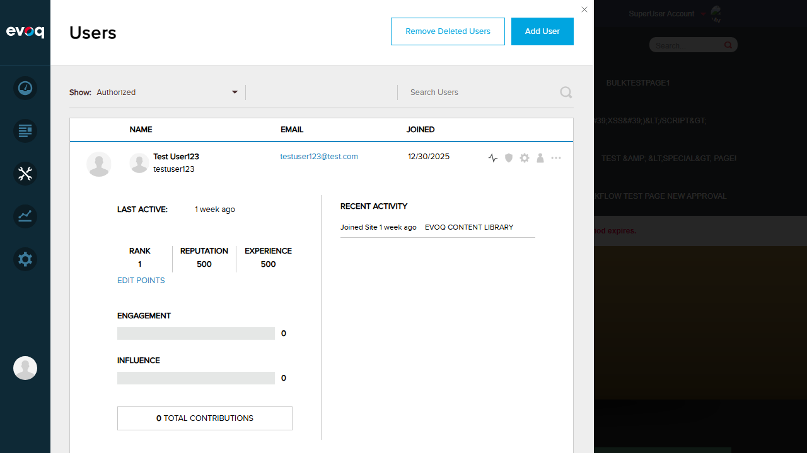
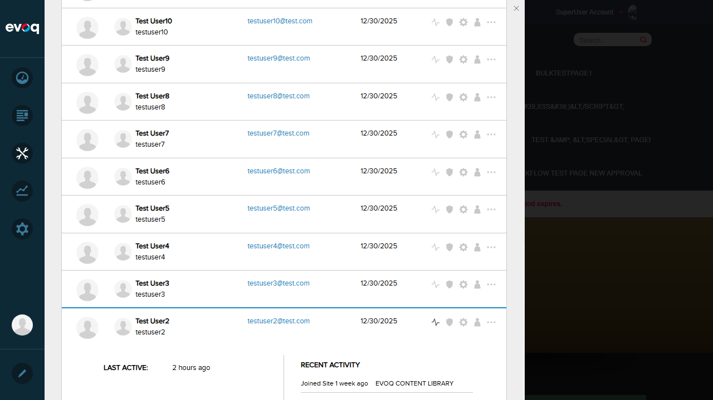
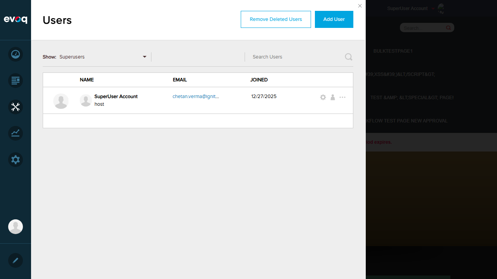
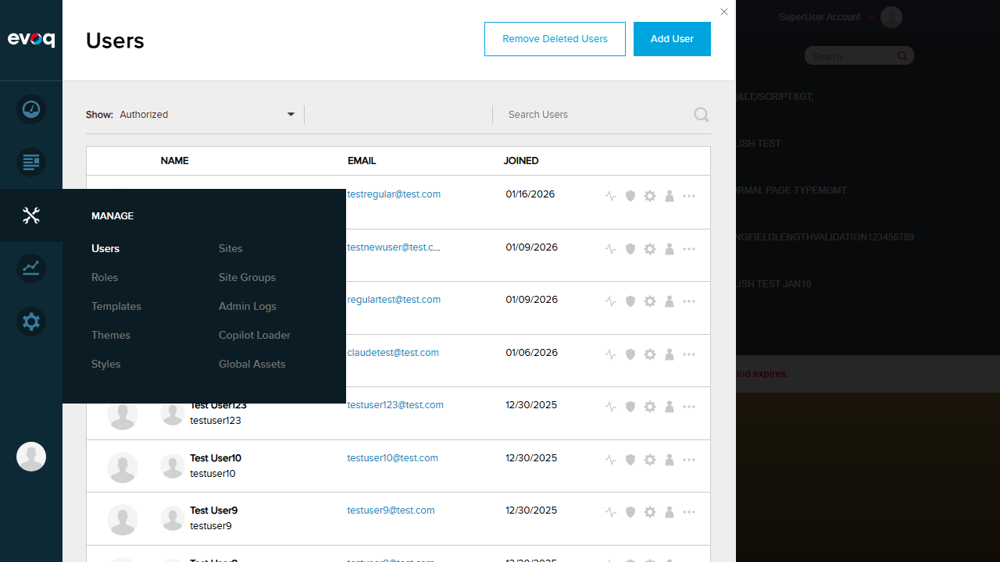
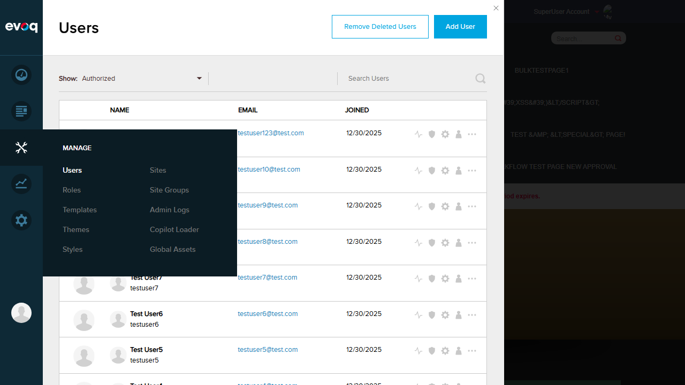

Test Report: User Activity Details View
Feature Information
| Extension | Evoq.PersonaBar.Users (PersonaBar Module) |
|---|
| Feature Name | User Activity Details View |
|---|
| Description | Display comprehensive user activity metrics including rank, reputation, experience, engagement, influence, and contribution statistics |
|---|
| Priority | High |
|---|
| UI Location | Admin > Users > Select User > Activity Tab |
|---|
| Test Date | 2026-01-06 |
|---|
| Tester | Automated (Claude Code) |
|---|
Test Results
Test 1: View Activity Details for Regular User with Activities
PASS
Objective: Verify that activity details display correctly for a regular user with activity data.
Steps:
- Navigate to Manage > Users in PersonaBar
- Locate Test User123 in the users list
- Click on the "User Activity" icon for the user
- Verify the activity panel expands and displays metrics
Expected Result: Activity details panel displays with all metrics.
Actual Result: Activity panel expanded successfully showing:
- Last Active: 1 week ago
- Rank: 1
- Reputation: 500
- Experience: 500
- Engagement: 0 (with progress bar)
- Influence: 0 (with progress bar)
- Total Contributions: 0
- Recent Activity: "Joined Site 1 week ago" - Evoq Content Library

Test 2: View Activity Details for Another User (Different Data)
PASS
Objective: Verify that activity details display correctly for another user with different activity metrics.
Steps:
- Locate Test User2 in the users list
- Click on the "User Activity" icon
- Verify different metrics are displayed
Expected Result: Different user should show different activity metrics.
Actual Result: Test User2 displayed with different metrics:
- Last Active: 2 hours ago (different relative time)
- Rank: 5 (different from Test User123's Rank 1)
- Reputation: 6 (different from 500)
- Experience: 7 (different from 500)
- Engagement: 0
- Influence: 0
- Total Contributions: 0

Test 3: Verify All Metrics Display Correctly (Rank, Reputation, Experience)
PASS
Objective: Verify that rank, reputation, and experience metrics are displayed correctly.
Steps:
- View activity details for any user
- Check that Rank, Reputation, and Experience are displayed
- Verify values are numeric
Expected Result: All three metrics should be displayed with numeric values.
Actual Result: All metrics displayed correctly:
- Test User123: Rank=1, Reputation=500, Experience=500
- Test User2: Rank=5, Reputation=6, Experience=7
The metrics are shown in a row with clear labels.
Test 4: Verify Engagement Percentage Display (0-100)
PASS
Objective: Verify that engagement is displayed as a percentage with a progress bar.
Steps:
- View activity details for a user
- Locate the Engagement section
- Verify it shows a value between 0-100 with a progress bar
Expected Result: Engagement displays as percentage (0-100) with visual progress bar.
Actual Result: Engagement displayed as "0" with a progress bar indicator. The progress bar visually represents the 0-100 range with filled and non-filled portions.
Test 5: Verify Influence Percentage Display
PASS
Objective: Verify that influence is displayed as a percentage with a progress bar.
Steps:
- View activity details for a user
- Locate the Influence section
- Verify it shows a value with a progress bar
Expected Result: Influence displays with visual progress bar.
Actual Result: Influence displayed as "0" with a progress bar indicator, similar to Engagement display.
Test 6: Verify Last Active Date Formatting (Relative Time)
PASS
Objective: Verify that the last active date is displayed in relative time format.
Steps:
- View activity details for multiple users
- Check the "Last Active" field format
Expected Result: Last Active should display in relative time format (e.g., "2 hours ago", "1 week ago").
Actual Result: Last Active displayed correctly in relative format:
- Test User123: "1 week ago"
- Test User2: "2 hours ago"
Test 7: Verify Total Contributions Count
PASS
Objective: Verify that total contributions count is displayed.
Steps:
- View activity details for a user
- Locate the Total Contributions section
Expected Result: Total Contributions should be displayed with a numeric count.
Actual Result: "0 Total Contributions" displayed correctly with the count in bold.
Test 8: Verify SuperUser Activities Cannot Be Viewed
PASS
Objective: Verify that the User Activity action is not available for SuperUser accounts.
Steps:
- Change the user filter to "Superusers"
- Locate the SuperUser Account (host) in the list
- Check available action icons for the SuperUser
Expected Result: User Activity icon should NOT be present for SuperUsers.
Actual Result: Confirmed - The SuperUser Account (host) only shows "Profile Settings" and "Account Settings" icons. The "User Activity" and "User Roles" icons are NOT available, confirming that SuperUser activities are restricted from viewing.

Observations
- Social SKU Features: The test environment is running Evoq Engage (trial), which is the DNNSOCIAL SKU. All Social-specific features (Rank, Engagement, Influence) are visible and functional. According to the code, these features would be hidden on non-Social SKUs.
- Edit Points Functionality: The "Edit Points" link is visible in the activity panel, allowing administrators to manually adjust Reputation and Experience values for users.
- Recent Activity Section: The Recent Activity section shows the most recent user activities with relative timestamps and the source module (e.g., "Evoq Content Library").
- Error Handling for Non-Existent User: This test scenario requires API-level testing as the UI only displays existing users from the database. The error handling logic exists in the backend controller (EvoqUsersController.cs) which returns appropriate HTTP error codes for invalid user IDs.
- Permission Requirements: The feature requires SHOW_USER_ACTIVITY permission, which is enforced at the API level. During testing, the host SuperUser account had full access to view all user activities.
- Progress Bars: Engagement and Influence use CSS-based progress bars that visually represent percentages from 0-100%.
Test Environment
| Website URL | http://localhost:8081 |
|---|
| User Account | host (SuperUser) |
|---|
| SKU | Evoq Engage (Trial - 20 days remaining) |
|---|
| Browser | Playwright (Chromium) |
|---|
| Viewport | 1280x720 |
|---|
Screenshots
Step 0: Login Confirmation

Step 1: Users List View

Step 2: User Activity Panel (Test User123)
Step 3: SuperUser List (No Activity Icon)
Step 4: User Activity Panel (Test User2)